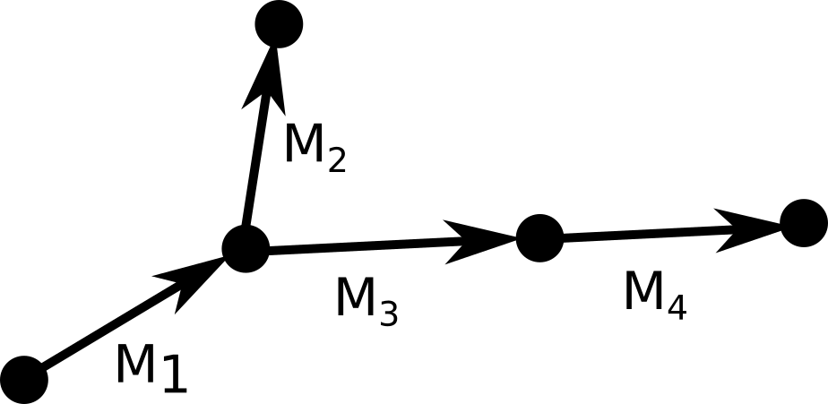
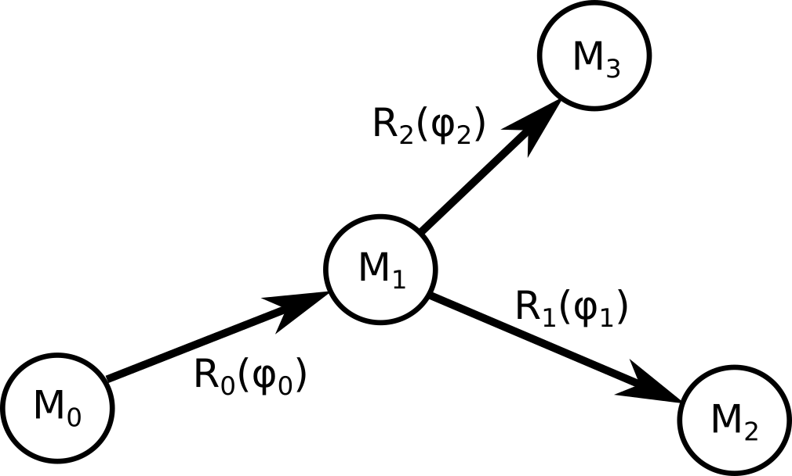
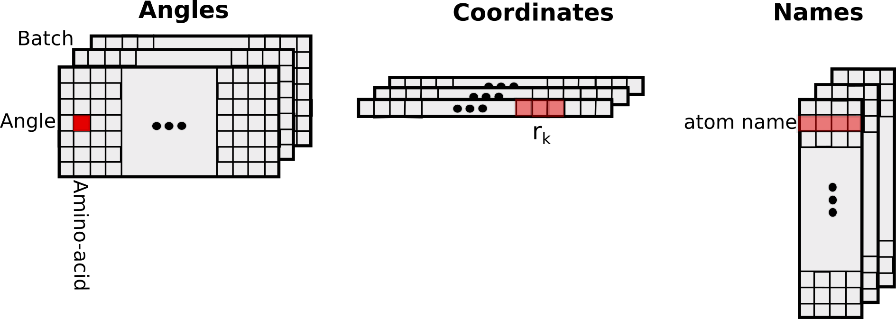
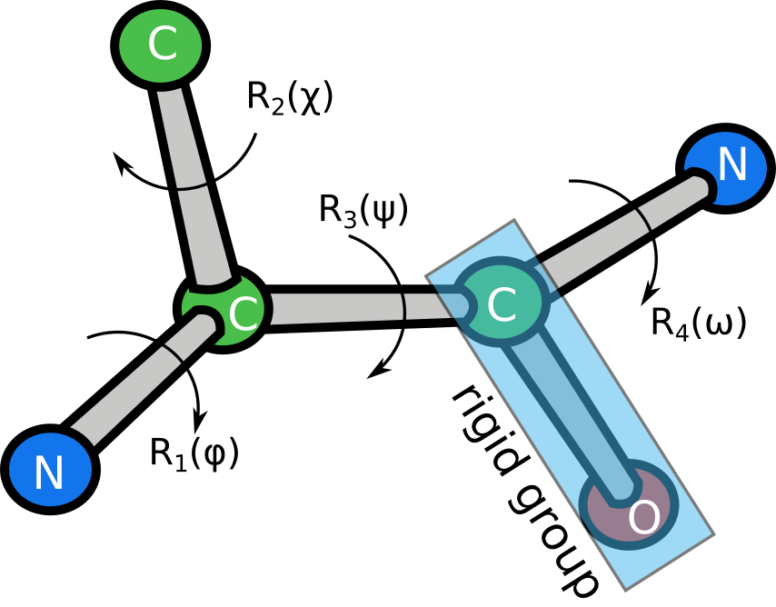
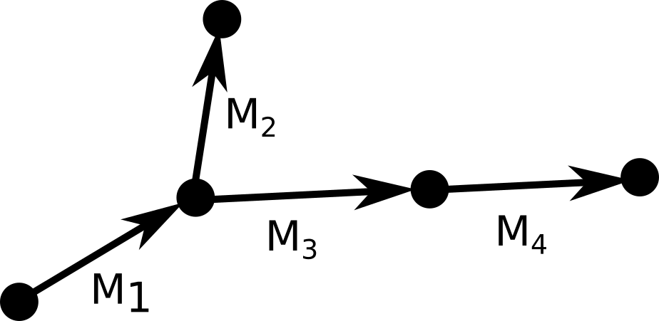
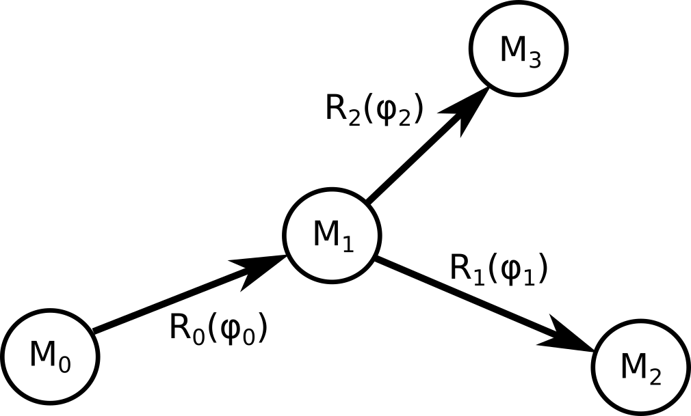
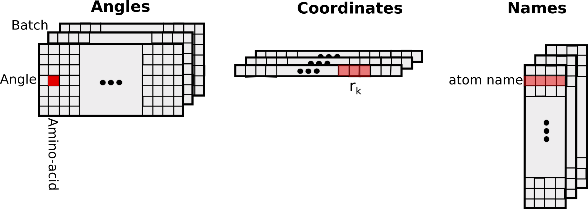

FullAtomModel
This module contains layers to convert angles to coordinates, load PDB files, assign atom types and transform coordinates of a protein.
This layer converts amino acid sequences and dihedral angles to atomic coordinates:
To compute the coordinates of a rigid group of atoms, we need to multiply each coordinate in an initial reference frame by the appropriate matrix. During the forward pass we construct a graph of cumulative transformations:  $$\begin{eqnarray} M_1 &=& R_1(\phi)\\ M_2 &=& R_1(\phi) R_2(\chi)\\ M_3 &=& R_1(\phi) R_3(\psi)\\ M_4 &=& R_1(\phi) R_3(\psi) R_4(\omega) \end{eqnarray}$$ In short, to get the cumulative transform of a node $M_{i}$, we take the cumulative transform $M_{parent(i)}$ and multiply it by the transform of the current node $R_{i}$. The atomic coordinates are obtained by multiplying the reference coordinates of each rigid group by its cumulative transform.
To compute the gradient of a function $L$ that depends on the coordinates of the model, let's consider the simple situation depicted here:
 Since the graph has three nodes, $L$ depends on three positions. The derivative with respect to the first dihedral angle is: $$ \frac{\partial L(\mathbf{r}_{1}, \mathbf{r}_{2}, \mathbf{r}_{3})}{\partial \phi_0} = \frac{\partial L}{\partial \mathbf{r_1}}\cdot \frac{\partial \mathbf{r_1}}{\partial \phi_0} + \frac{\partial L}{\partial \mathbf{r_2}}\cdot \frac{\partial \mathbf{r_2}}{\partial \phi_0} + \frac{\partial L}{\partial \mathbf{r_3}}\cdot \frac{\partial \mathbf{r_3}}{\partial \phi_0} $$ The first term of that sum can be written as: $$ \frac{\partial L}{\partial \mathbf{r_1}}\cdot \frac{\partial \mathbf{r_1}}{\partial \phi_0} = \frac{\partial L}{\partial \mathbf{r_1}}\cdot M_0 \frac{\partial R_0}{\partial \phi_0} \mathbf{r}^0_1 $$ where $\mathbf{r}^0_1$ is the vector of atom 1 in the initial reference frame. The other two terms can be written as: $$ \frac{\partial L}{\partial \mathbf{r_2}}\cdot \frac{\partial \mathbf{r_2}}{\partial \phi_0} = \frac{\partial L}{\partial \mathbf{r_2}}\cdot M_0 \frac{\partial R_0}{\partial \phi_0} R_1 \mathbf{r}^0_2 $$ $$ \frac{\partial L}{\partial \mathbf{r_3}}\cdot \frac{\partial \mathbf{r_3}}{\partial \phi_0} = \frac{\partial L}{\partial \mathbf{r_3}}\cdot M_0 \frac{\partial R_0}{\partial \phi_0} R_2 \mathbf{r}^0_3 $$ We can write those expressions using $\mathbf{r}_k$, the transformed atomic coordinates calculated during the forward pass: $$ \frac{\partial L}{\partial \mathbf{r_1}}\cdot \frac{\partial \mathbf{r_1}}{\partial \phi_0} = \frac{\partial L}{\partial \mathbf{r_1}}\cdot M_0 \frac{\partial R_0}{\partial \phi_0} M_1^{-1} M_1 \mathbf{r}^0_1 = \frac{\partial L}{\partial \mathbf{r_1}}\cdot M_0 \frac{\partial R_0}{\partial \phi_0} M^{-1}_1 \mathbf{r}_1 $$ $$ \frac{\partial L}{\partial \mathbf{r_2}}\cdot \frac{\partial \mathbf{r_2}}{\partial \phi_0} = \frac{\partial L}{\partial \mathbf{r_2}}\cdot M_0 \frac{\partial R_0}{\partial \phi_0} M_1^{-1} M_1 R_1 \mathbf{r}^0_2 = \frac{\partial L}{\partial \mathbf{r_2}}\cdot M_0 \frac{\partial R_0}{\partial \phi_0} M_1^{-1} M_2 \mathbf{r}^0_2 = \frac{\partial L}{\partial \mathbf{r_2}}\cdot M_0 \frac{\partial R_0}{\partial \phi_0} M_1^{-1} \mathbf{r}_2 $$ $$ \frac{\partial L}{\partial \mathbf{r_3}}\cdot \frac{\partial \mathbf{r_3}}{\partial \phi_0} = \frac{\partial L}{\partial \mathbf{r_3}}\cdot M_0 \frac{\partial R_0}{\partial \phi_0} M^{-1}_1 \mathbf{r}_3 $$ Now, let's return back to the sum: $$ \frac{\partial L(\mathbf{r}_{1}, \mathbf{r}_{2}, \mathbf{r}_{3})}{\partial \phi_0} = \sum^3_{k=1} \frac{\partial L}{\partial \mathbf{r_k}}\cdot M_0 \frac{\partial R_0}{\partial \phi_0} M^{-1}_1 \mathbf{r}_k $$ In this formula index $k$ iterates over the children of node 0. This expression can be generalized to any graph without loops. Matrices $ F_i = M_i \frac{\partial R_i}{\partial \phi_i} M^{-1}_{i+1}$ are computed during the forward pass. The final expression for the derivative is: $$ \frac{\partial L}{\partial \phi_i} = \frac{\partial L}{\partial \mathbf{r_k}}\cdot F_i \sum_{k \in children(i)} \mathbf{r}_k $$ These sums can be easily computed during backward deph-first propagation through the graph.

from TorchProteinLibrary import FullAtomModel
a2c = FullAtomModel.Angles2Coords()
sequences = ["AAA"]
angles = torch.randn(1, 8, 3, dtype=torch.double)
coords, res_names, atom_names, num_atoms = a2c(angles, sequences)
Implementation
The layer computes the coordinates by building a graph of transforms, acting on rigid groups of atoms. For example, the following figure shows a schematic representation of threonine, which has 5 rigid groups in total and is parametrized by 4 transforms.  Each transform is represented by a dihedral angle $\alpha$ and has the form $$ R_i(\alpha) = R(\alpha, \beta_i, d_i) = R_y (\beta_i) T_x(d_i) R_x(\alpha) $$ where $R_x(\alpha)$ and $R_y(\beta_i)$ are the 4x4 rotation matrices around axes $x$ and $y$, and $T_x(d_i)$ is the 4x4 translation matrix along axis $x$. $\beta_i$ and $d_i$ are fixed parameters for which we do not compute derivatives. For instance, the first transform of the threonine parametrization shown above can be written as $$ R_1(\phi) = R(\phi, \theta_1, d_1)$$ where $\phi$ is the first dihedral angle (variable), $\theta_1$ is the X-N-CA angle (fixed), and $d_1$ is the N-CA bond length (fixed). Atom names are encoded in ASCII following the standard PDB nomenclature, with the last symbol always set to '\0'.To compute the coordinates of a rigid group of atoms, we need to multiply each coordinate in an initial reference frame by the appropriate matrix. During the forward pass we construct a graph of cumulative transformations:  $$\begin{eqnarray} M_1 &=& R_1(\phi)\\ M_2 &=& R_1(\phi) R_2(\chi)\\ M_3 &=& R_1(\phi) R_3(\psi)\\ M_4 &=& R_1(\phi) R_3(\psi) R_4(\omega) \end{eqnarray}$$ In short, to get the cumulative transform of a node $M_{i}$, we take the cumulative transform $M_{parent(i)}$ and multiply it by the transform of the current node $R_{i}$. The atomic coordinates are obtained by multiplying the reference coordinates of each rigid group by its cumulative transform.
To compute the gradient of a function $L$ that depends on the coordinates of the model, let's consider the simple situation depicted here:
 Since the graph has three nodes, $L$ depends on three positions. The derivative with respect to the first dihedral angle is: $$ \frac{\partial L(\mathbf{r}_{1}, \mathbf{r}_{2}, \mathbf{r}_{3})}{\partial \phi_0} = \frac{\partial L}{\partial \mathbf{r_1}}\cdot \frac{\partial \mathbf{r_1}}{\partial \phi_0} + \frac{\partial L}{\partial \mathbf{r_2}}\cdot \frac{\partial \mathbf{r_2}}{\partial \phi_0} + \frac{\partial L}{\partial \mathbf{r_3}}\cdot \frac{\partial \mathbf{r_3}}{\partial \phi_0} $$ The first term of that sum can be written as: $$ \frac{\partial L}{\partial \mathbf{r_1}}\cdot \frac{\partial \mathbf{r_1}}{\partial \phi_0} = \frac{\partial L}{\partial \mathbf{r_1}}\cdot M_0 \frac{\partial R_0}{\partial \phi_0} \mathbf{r}^0_1 $$ where $\mathbf{r}^0_1$ is the vector of atom 1 in the initial reference frame. The other two terms can be written as: $$ \frac{\partial L}{\partial \mathbf{r_2}}\cdot \frac{\partial \mathbf{r_2}}{\partial \phi_0} = \frac{\partial L}{\partial \mathbf{r_2}}\cdot M_0 \frac{\partial R_0}{\partial \phi_0} R_1 \mathbf{r}^0_2 $$ $$ \frac{\partial L}{\partial \mathbf{r_3}}\cdot \frac{\partial \mathbf{r_3}}{\partial \phi_0} = \frac{\partial L}{\partial \mathbf{r_3}}\cdot M_0 \frac{\partial R_0}{\partial \phi_0} R_2 \mathbf{r}^0_3 $$ We can write those expressions using $\mathbf{r}_k$, the transformed atomic coordinates calculated during the forward pass: $$ \frac{\partial L}{\partial \mathbf{r_1}}\cdot \frac{\partial \mathbf{r_1}}{\partial \phi_0} = \frac{\partial L}{\partial \mathbf{r_1}}\cdot M_0 \frac{\partial R_0}{\partial \phi_0} M_1^{-1} M_1 \mathbf{r}^0_1 = \frac{\partial L}{\partial \mathbf{r_1}}\cdot M_0 \frac{\partial R_0}{\partial \phi_0} M^{-1}_1 \mathbf{r}_1 $$ $$ \frac{\partial L}{\partial \mathbf{r_2}}\cdot \frac{\partial \mathbf{r_2}}{\partial \phi_0} = \frac{\partial L}{\partial \mathbf{r_2}}\cdot M_0 \frac{\partial R_0}{\partial \phi_0} M_1^{-1} M_1 R_1 \mathbf{r}^0_2 = \frac{\partial L}{\partial \mathbf{r_2}}\cdot M_0 \frac{\partial R_0}{\partial \phi_0} M_1^{-1} M_2 \mathbf{r}^0_2 = \frac{\partial L}{\partial \mathbf{r_2}}\cdot M_0 \frac{\partial R_0}{\partial \phi_0} M_1^{-1} \mathbf{r}_2 $$ $$ \frac{\partial L}{\partial \mathbf{r_3}}\cdot \frac{\partial \mathbf{r_3}}{\partial \phi_0} = \frac{\partial L}{\partial \mathbf{r_3}}\cdot M_0 \frac{\partial R_0}{\partial \phi_0} M^{-1}_1 \mathbf{r}_3 $$ Now, let's return back to the sum: $$ \frac{\partial L(\mathbf{r}_{1}, \mathbf{r}_{2}, \mathbf{r}_{3})}{\partial \phi_0} = \sum^3_{k=1} \frac{\partial L}{\partial \mathbf{r_k}}\cdot M_0 \frac{\partial R_0}{\partial \phi_0} M^{-1}_1 \mathbf{r}_k $$ In this formula index $k$ iterates over the children of node 0. This expression can be generalized to any graph without loops. Matrices $ F_i = M_i \frac{\partial R_i}{\partial \phi_i} M^{-1}_{i+1}$ are computed during the forward pass. The final expression for the derivative is: $$ \frac{\partial L}{\partial \phi_i} = \frac{\partial L}{\partial \mathbf{r_k}}\cdot F_i \sum_{k \in children(i)} \mathbf{r}_k $$ These sums can be easily computed during backward deph-first propagation through the graph.
Input/Output
The input and output tensors have the following structure:
Example
import torch
from TorchProteinLibrary import FullAtomModel
import numpy as np
import matplotlib.pylab as plt
import mpl_toolkits.mplot3d.axes3d as p3
if __name__=='__main__':
a2c = FullAtomModel.Angles2Coords()
sequences = ['GGMLGWAHFGY']
#Setting conformation to alpha-helix
angles = torch.zeros(len(sequences), 8, len(sequences[-1]), dtype=torch.double, device='cpu')
angles.data[:,0,:] = -1.047
angles.data[:,1,:] = -0.698
angles.data[:,3,:] = np.pi
angles.data[:,3:,:] = 110.4*np.pi/180.0
#Converting angles to coordinates
coords, res_names, atom_names, num_atoms = a2c(angles, sequences)
#Making a mask on CA, C, N atoms
is0C = torch.eq(atom_names[:,:,0], 67).squeeze()
is1A = torch.eq(atom_names[:,:,1], 65).squeeze()
is20 = torch.eq(atom_names[:,:,2], 0).squeeze()
is0N = torch.eq(atom_names[:,:,0], 78).squeeze()
is10 = torch.eq(atom_names[:,:,1], 0).squeeze()
isCA = is0C*is1A*is20
isC = is0C*is10
isN = is0N*is10
isSelected = torch.ge(isCA + isC + isN, 1)
#Resizing coordinates array for convenience (to match selection mask)
N = int(num_atoms[0].item())
coords.resize_(1, N, 3)
backbone_x = torch.masked_select(coords[0,:,0], isSelected)
backbone_y = torch.masked_select(coords[0,:,1], isSelected)
backbone_z = torch.masked_select(coords[0,:,2], isSelected)
#Plotting all atoms with the red dots and backbone with the blue line
sx, sy, sz = coords[0,:,0].numpy(), coords[0,:,1].numpy(), coords[0,:,2].numpy()
bx, by, bz = backbone_x.numpy(), backbone_y.numpy(), backbone_z.numpy()
fig = plt.figure()
plt.title("Full atom model")
ax = p3.Axes3D(fig)
ax.plot(sx,sy,sz, 'r.', label = 'atoms')
ax.plot(bx,by,bz, 'b-', label = 'backbone')
ax.legend()
plt.show()
plt.savefig("ExampleAngles2Coords.png")
This layer assigns atom types and rearranges coordinates according to types.
Currently we use 11 atom types defined as following:
Output coordinates are arranged such that atoms of one type are grouped together in a contiguous stretch of memory.
NumAtomsOfType stores the number of atoms of particular type and offsets are the number of atoms in the memory, before
particular atom type stretch of coordinates begins. For example, we get the coordinates of the first atom of type 8 in sample $i$ using:
$$ r = \mathrm{Coordinates}[i, 3(\mathrm{Offsets}[8] + 0)] $$
| Type | Description | Atoms |
|---|---|---|
| 1 | Sulfur/selenium | CYS:SG, MET:SD, MSE:SE |
| 2 | Nitrogen (amide) | ASN:ND2, GLN:NE2, backbone N (including N-terminal) |
| 3 | Nitrogen (aromatic) | HIS:ND1/NE1, TRP:NE1 |
| 4 | Nitrogen (guanidinium) | ARG:NE/NH* |
| 5 | Nitrogen (ammonium) | LYS:NZ |
| 6 | Oxygen (carbonyl) | ASN:OD1, GLN:OE1, backbone O (except C-terminal) |
| 7 | Oxygen (hydroxyl) | SER:OG, THR:OG1, TYR:OH |
| 8 | Oxygen (carboxyl) | ASP:OD*, GLU:OE*, C-terminal O, C-terminal OXT |
| 9 | Carbon (sp2) | ARG:CZ, ASN:CG, ASP:CG, GLN:CD, GLU:CD, backbone C |
| 10 | Carbon (aromatic) | HIS:CG/CD2/CE1, PHE:CG/CD*/CE*/CZ, TRP:CG/CD*/CE*/CZ*/CH2, TYR:CG/CD*/CE*/CZ |
| 11 | Carbon (sp3) | ALA:CB, ARG:CB/CG/CD, ASN:CB, ASP:CB, CYS:CB, GLN:CB/CG, GLU:CB/CG, HIS:CB, ILE:CB/CG*/CD1, LEU:CB/CG/CD*, LYS:CB/CG/CD/CE, MET:CB/CG/CE, MSE:CB/CG/CE, PHE:CB, PRO:CB/CG/CD, SER:CB, THR:CB/CG2, TRP:CB, TYR:CB, VAL:CB/CG*, backbone CA |
Input/Output
Reads PDB and outputs coordinates, residue and atom names and number of atoms. The order of atoms is the same as in the PDB file.
from TorchProteinLibrary import FullAtomModel
coords, res_names, atom_names, num_atoms = FullAtomModel.PDB2CoordsUnordered(["f4TQ1_B.pdb"])
Input/Output
Example
import torch
from TorchProteinLibrary import FullAtomModel
import numpy as np
import matplotlib
import matplotlib.pylab as plt
import mpl_toolkits.mplot3d.axes3d as p3
from scipy.spatial import ConvexHull
cmap = matplotlib.cm.get_cmap('Spectral')
if __name__=='__main__':
#Reading pdb file
p2c = FullAtomModel.PDB2CoordsUnordered()
coords, chains, res_names, res_nums, atom_names, num_atoms = p2c(["f4TQ1_B.pdb"])
#Resizing coordinates array for convenience
N = int(num_atoms[0].item())
coords.resize_(1, N, 3)
N_res = res_nums[0,-1].item()+1
residue_hulls = []
residue_coords = []
for i in range(N_res):
mask = torch.eq(res_nums[0,:], i)
num_res_atoms = int(mask.sum().item())
# Obtaining coordinates of all atoms of a single residue
coords_mask = torch.stack([mask, mask, mask], dim = 1).unsqueeze(dim=0)
res_coords = coords.masked_select(coords_mask).resize(num_res_atoms, 3).numpy()
residue_coords.append(res_coords)
# Constructing a convex hull
hull = ConvexHull(res_coords)
residue_hulls.append(hull)
#Plotting all atoms with the red dots
cmap = matplotlib.cm.get_cmap('Set3')
sx, sy, sz = coords[0,:,0].numpy(), coords[0,:,1].numpy(), coords[0,:,2].numpy()
fig = plt.figure()
plt.title("PDB2CoordsUnordered")
ax = p3.Axes3D(fig)
i_res = 0
for hull, coords in zip(residue_hulls,residue_coords):
for simplex in hull.simplices:
ax.plot(coords[simplex, 0], coords[simplex,1], coords[simplex,2], color = cmap(float(i_res)/float(N_res)))
i_res += 1
ax.plot(sx,sy,sz, 'r.', label = 'atoms')
ax.legend()
plt.show()
plt.savefig("ExamplePDB2CoordsUnordered.png")
Translates coordinates, namely:
$$ \mathbf{r}_i' = \mathbf{r}_i + \mathbf{T}_k $$
where $i = 0$ to $N_k - 1$ and $k = 0$ to $batch\_size-1$.
($N_k$ is the number of atoms in the $k$-th batch sample.)
from TorchProteinLibrary import FullAtomModel
translate = FullAtomModel.CoordsTranslate()
coords = torch.randn(1, 4*3, dtype=torch.double)
translation = torch.randn(1, 3, dtype=torch.double)
num_atoms = torch.tensor([4], dtype=torch.int)
coords_t = translate(coords, translation, num_atoms)
Input/Output
Rotates coordinates, namely:
$$ \mathbf{r}_i' = R_k \mathbf{r}_i $$
where $i = 0$ to $N_k - 1$ and $k = 0$ to $batch\_size-1$.
($N_k$ is the number of atoms in the $k$-th batch sample.)
from TorchProteinLibrary import FullAtomModel
rotate = FullAtomModel.CoordsRotate()
coords = torch.randn(1, 4*3, dtype=torch.double)
rotation = torch.eye(4, 4, dtype=torch.double).unsqueeze(dim=0)
num_atoms = torch.tensor([4], dtype=torch.int)
coords_r = rotate(coords, rotation, num_atoms)
Input/Output
Returns geometrical center of a set of coordinates:
$$ \mathbf{r}_i' = \frac{1}{N_k}\sum_i \mathbf{r}_i $$
where $i = 0$ to $N_k - 1$ and $k = 0$ to $batch\_size-1$.
($N_k$ is the number of atoms in the $k$-th batch sample.)
from TorchProteinLibrary import FullAtomModel
center = FullAtomModel.Coords2Center()
coords = torch.randn(1, 4*3, dtype=torch.double)
num_atoms = torch.tensor([4], dtype=torch.int)
coords_c = center(coords, num_atoms)
Input/Output
Computes axis-aligned bounding box, non-differentiable. A is the corner with the lowest coordinates and
B is the corner with the highest coordinates.
from TorchProteinLibrary import FullAtomModel
coords = torch.randn(1, 4*3, dtype=torch.double)
num_atoms = torch.tensor([4], dtype=torch.int)
A, B = FullAtomModel.getBBox(coords, num_atoms)
Input/Output
Returns a random translation that keeps the protein bounding box within a cube of a given size.
from TorchProteinLibrary import FullAtomModel
A = torch.randn(1, 3, dtype=torch.double)
B = A + torch.abs(torch.randn(1, 3, dtype=torch.double))
translation = FullAtomModel.getRandomTranslation(A, B, 120)
Input/Output
Returns a random rotation by uniformly sampling the $SO(3)$ group.
from TorchProteinLibrary import FullAtomModel
R = FullAtomModel.getRandomRotation(1)